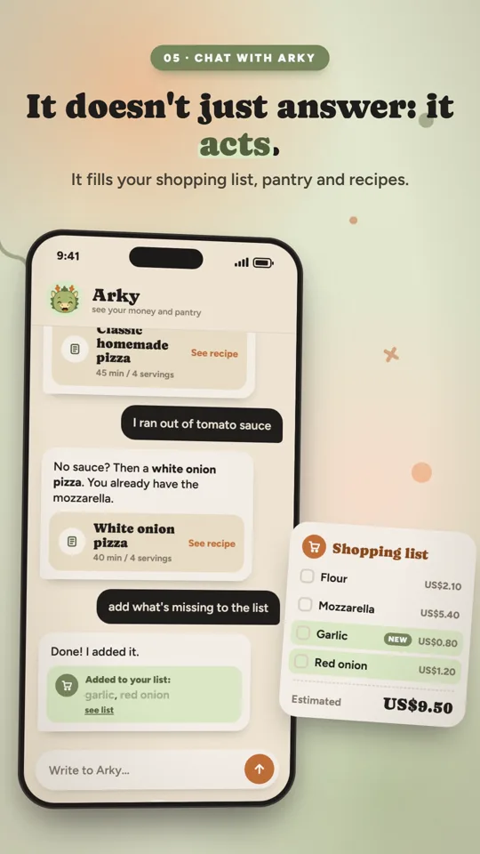
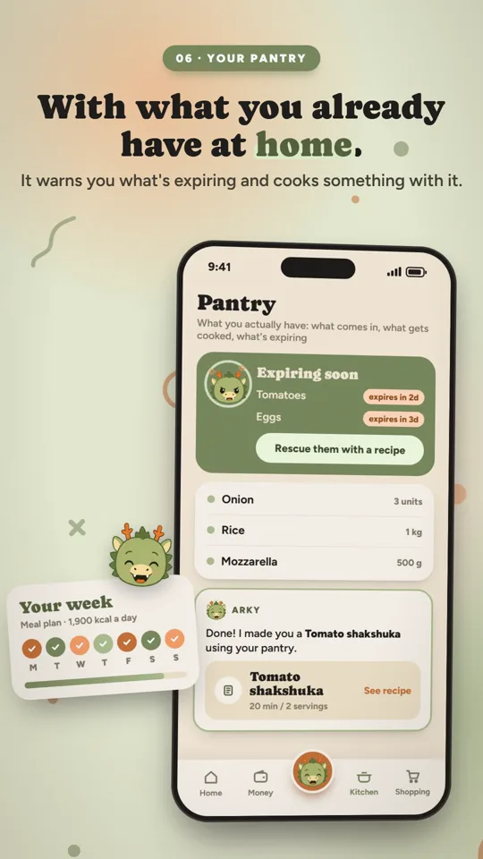

Arky, an assistant for the kitchen and your money
A web app where an LLM assistant takes real actions, not just answers. It creates recipes, adds missing items to the shopping list and records an expense you dictate. It sees both areas at once: asked "can I afford delivery tonight?", it checks what's left to spend this month and what in the pantry is about to expire.
Decisions worth mentioning
- Any action that touches money asks for confirmation before it's applied.
- The AI provider sits behind an interface: Gemini in production, and a deterministic mock for development and tests.
- Ingredients and units are normalized, so "chicken breast" matches "chicken" and 1 kg compares with 500 g.
- The finance module forecasts 12 months with inflation, salary updates and conservative, base and optimistic scenarios.
Evidence
More than 850 backend tests, 88 frontend unit tests and an end-to-end Playwright run. JWT authentication, deployed on Railway (nginx web, Dockerized API, PostgreSQL). The app is bilingual (English and Spanish) and sign-up is open.
Sign-up is open and the app works in English. Open-source finance module: github.com/Lauaf/Arky-Finances ↗
The full source code is private and available on request.



Scenes from Arky's product video: the real app, in English.